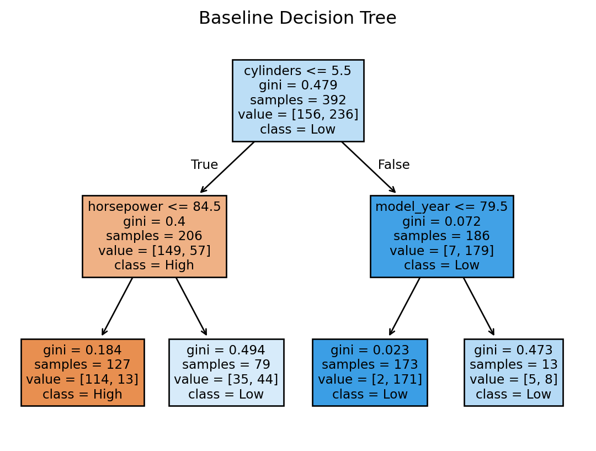
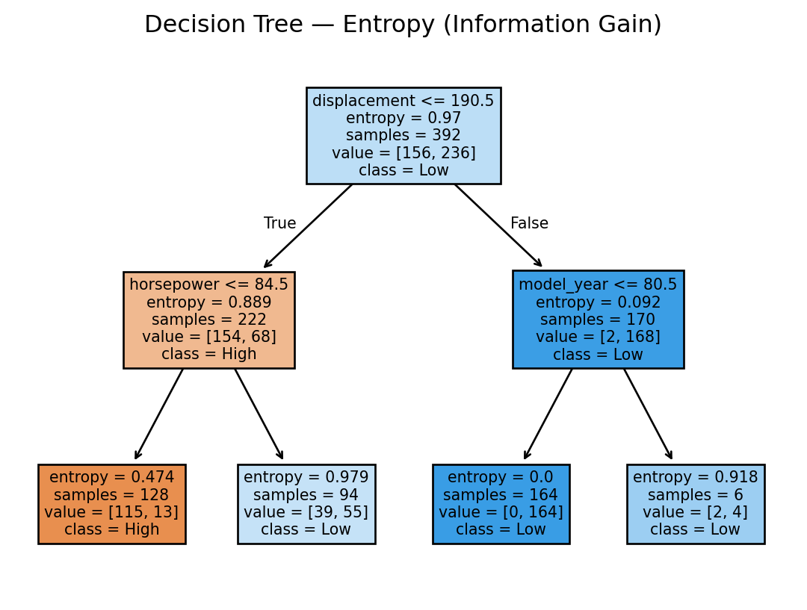
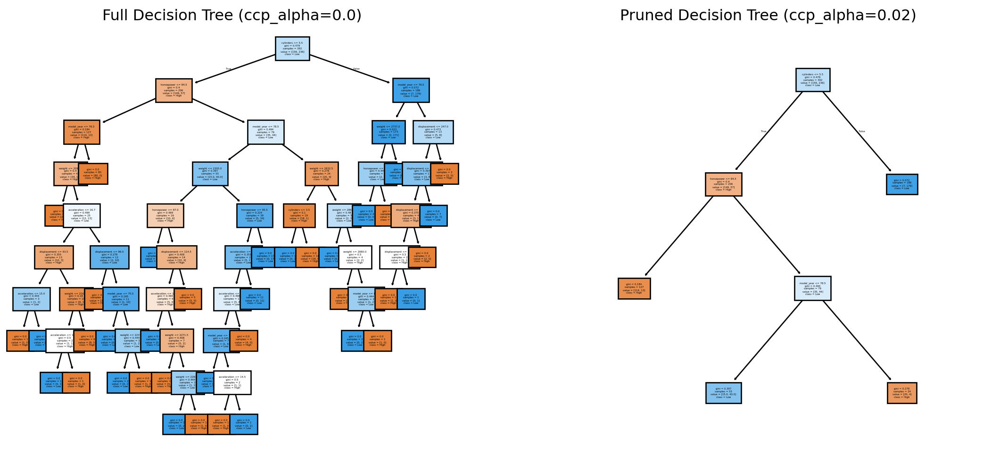
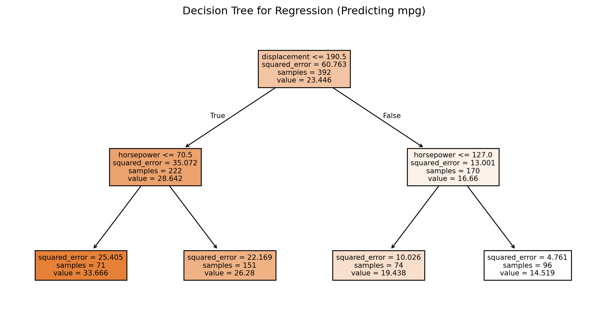

import numpy as np
import pandas as pd
import seaborn as sns
import matplotlib.pyplot as plt13 Decision Trees
This section introduces decision trees, a rule-based algorithm widely used in data mining tasks such as classification and regression.
13.1 What is a Decision Tree?
A decision tree is a tree-structured model that makes predictions by recursively splitting the data:
- As a non-parametric method, it makes no assumptions about the underlying data distribution.
- As an eager learning algorithm, it builds a model during training (unlike lazy learners such as kNN).
For classification, a decision tree predicts the class of a new sample by following a sequence of rules (splits) until reaching a leaf node that corresponds to a class label.
For regression, the tree outputs the average target value of the samples in the reached leaf.
13.1.1 The Core Decision Tree Algorithm
Training a decision tree involves:
- Selecting a feature and split point that best partitions the data in terms of splitting criteria
- Splitting the dataset into subsets based on the chosen feature threshold.
- Recursively repeating this process on each subset until a stopping condition is met (e.g., maximum depth, minimum samples per leaf, or pure leaves).
- Assigning predictions at the leaves: majority class (classification) or mean value (regression).
NoteSplitting Criteria
To decide the best split at each step, decision trees use impurity or information measures:
- Gini impurity: measures how often a randomly chosen element would be incorrectly labeled.
- Entropy (information gain): measures reduction in uncertainty when splitting by a feature.
- Variance reduction: commonly used for regression trees, reducing variability in target values.
The choice of criterion affects how the tree partitions the data.
NoteOverfitting and Pruning
Decision trees can easily overfit the training data, especially if allowed to grow deep.
- Pre-pruning: limit tree depth, set a minimum number of samples per split, or require a minimum impurity decrease.
- Post-pruning: grow a large tree first, then prune branches that do not improve validation performance.
Pruning helps improve generalization by preventing the tree from capturing noise in the data.
13.2 Preliminaries
13.2.1 Packages
13.2.2 Data
Let’s load the mpg data from the seaborn package, which consists of 398 auto samples (rows) and 9 columns describing various car attributes.
This dataset relates to predicting the mileage of cars (mpg column) using the other 8 features.
# Load and preview the data
df = sns.load_dataset("mpg")
df.head()| mpg | cylinders | displacement | horsepower | weight | acceleration | model_year | origin | name | |
|---|---|---|---|---|---|---|---|---|---|
| 0 | 18.0 | 8 | 307.0 | 130.0 | 3504 | 12.0 | 70 | usa | chevrolet chevelle malibu |
| 1 | 15.0 | 8 | 350.0 | 165.0 | 3693 | 11.5 | 70 | usa | buick skylark 320 |
| 2 | 18.0 | 8 | 318.0 | 150.0 | 3436 | 11.0 | 70 | usa | plymouth satellite |
| 3 | 16.0 | 8 | 304.0 | 150.0 | 3433 | 12.0 | 70 | usa | amc rebel sst |
| 4 | 17.0 | 8 | 302.0 | 140.0 | 3449 | 10.5 | 70 | usa | ford torino |
13.2.3 Preprocessing
With the dataset, let’s consider a classification problem, where the task is to predict whether a car’s mileage is “High” or “Low”, based on a threshold of 25 miles per gallon (MPG).
To do this, let’s convert the numeric mpg into a categorical variable with two classes, High for mpg > 25, and Low otherwise:
# Convert mpg to categorical: 'High' if > 25, else 'Low'
df['mpg'] = df['mpg'].apply(lambda x: 'High' if x > 25 else 'Low')
print(df.head()) mpg cylinders displacement horsepower weight acceleration model_year \
0 Low 8 307.0 130.0 3504 12.0 70
1 Low 8 350.0 165.0 3693 11.5 70
2 Low 8 318.0 150.0 3436 11.0 70
3 Low 8 304.0 150.0 3433 12.0 70
4 Low 8 302.0 140.0 3449 10.5 70
origin name
0 usa chevrolet chevelle malibu
1 usa buick skylark 320
2 usa plymouth satellite
3 usa amc rebel sst
4 usa ford torino
Note
lambda Function
A lambda function in Python is a way to create a small, one-line function without giving it a name, which is generally defined in a form:
lambda arguments: expression
lambda: tells Python you are defining a lambda function.arguments: the inputs (like parameters in a normal function).expression: what the function returns.
The following example shows the same operation in two different forms:
# Regular function
def square(x):
return x * x
# Equivalent lambda function
square_lambda = lambda x: x * x
print("Regular function result:", square(5)) # 25
print("Lambda function result: ", square_lambda(5)) # 25Regular function result: 25
Lambda function result: 25It’s commonly used when:
- For short, simple functions you don’t plan to reuse.
- Common with tools like
map(),filter(),sorted(), and Pandas’apply(). - For anything longer or more complex, use a normal def function for clarity.
Note
Understanding the code: df['mpg'].apply(lambda x: 'High' if x > 25 else 'Low'):
df['mpg']: selects thempgcolumn in the dataset.
.apply(...): applies a function to each value in that column.
lambda x: ...: defines an function that takes one inputx(eachmpgvalue).
Inside the lambda function:
- If the value
xis greater than 25, return"High".
- Otherwise, return
"Low".
So the whole line transforms the numeric mpg column into a new categorical column with two classes:
"High"for cars withmpg> 25.
"Low"for cars withmpg≤ 25.
For classification tasks using decision trees and many other models, it is important to explicitly encode categorical labels. let’s use astype('category') to ensure the transformed variables are interpreted nominally.
# Ensure categorical type for mpg
df['mpg'] = df['mpg'].astype('category')
print(df.dtypes)mpg category
cylinders int64
displacement float64
horsepower float64
weight int64
acceleration float64
model_year int64
origin object
name object
dtype: objectFor simplicity, let’s remove two columns, origin and name, in this example.
df = df.drop(['origin', 'name'], axis=1) # drop the columnsThe dataset contains 6 rows with missing values (NaNs). Since decision trees in scikit-learn cannot handle missing data directly, we need to address them1. In this example, let’s simply drop those rows.
df = df.dropna(axis=0) # drop the rows containing any missing components
# (keep only the rows that have all components observed)Finally, let’s separate the data into an input feature matrix X (predictors) and a target vector y (High/Low mpg classes):
X = df.drop(['mpg'], axis=1)
y = df['mpg']13.3 Decision Tree for Classification
13.3.1 Building a Model
Let’s create a baseline decision tree model for classification, using the DecisionTreeClassifier() function from scikit-learn with a simple setting of some key parameters:
from sklearn.tree import DecisionTreeClassifier
# Initialize baseline decision tree
clf_base = DecisionTreeClassifier(
max_depth=2, # maximum depth of the tree
random_state=1 # seed for reproducibility
)For more detailed setting, check the documentation.
13.3.1.1 Model Training
To train the decision tree classifier on the dataset X and y:
# Fit the model to training data
clf_base.fit(X, y)DecisionTreeClassifier(max_depth=2, random_state=1)In a Jupyter environment, please rerun this cell to show the HTML representation or trust the notebook.
On GitHub, the HTML representation is unable to render, please try loading this page with nbviewer.org.
DecisionTreeClassifier(max_depth=2, random_state=1)
We can display the learned decision rules using tree.export_text():
from sklearn.tree import export_text
# Export decision tree rules as text
clf_base_rules = export_text(clf_base, feature_names=list(X.columns))
print(clf_base_rules)|--- cylinders <= 5.50
| |--- horsepower <= 84.50
| | |--- class: High
| |--- horsepower > 84.50
| | |--- class: Low
|--- cylinders > 5.50
| |--- model_year <= 79.50
| | |--- class: Low
| |--- model_year > 79.50
| | |--- class: Low
13.3.1.2 Visualization
The plot_tree() function in scikit-learn provides a quick way to visualize the trained tree:
from sklearn.tree import plot_tree
# Create a Figure and Axes object (OO interface)
fig, ax = plt.subplots() # fig defines the whole canvas, ax is the plotting area
# Draw the decision tree on the Axes object
plot_tree(
clf_base,
feature_names=X.columns, # names of the predictor variables
class_names=y.cat.categories, # names of the target classes
filled=True, # color nodes by majority class
ax=ax # tell plot_tree which Axes to use
)
# Add a title to the plot (attached to Axes)
ax.set_title("Baseline Decision Tree")
# Display the plot
plt.show()
13.3.1.3 Impurity Measures for Splitting Rules
When building a decision tree, the algorithm must decide where to split the data at each node. The goal is to create groups (child nodes) that are as pure as possible — meaning the data within each group belongs mostly to a single class.
- Pure node: contains data points from only one class (e.g., all
"High"mileage cars).
- Impure node: contains a mix of classes (e.g., some
"High", some"Low").
At each step of training, the tree looks for the split that produces the biggest drop in impurity. This process continues until all the nodes are pure (or meet stopping criteria).
The DecisionTreeClassifier() in scikit-learn supports two impurity measures:
- Gini index (
criterion="gini", the default inDecisionTreeClassifier()): measures how often a randomly chosen sample would be misclassified. - Entropy / Information Gain (
criterion="entropy"): measures reduction in uncertainty (based on information theory).
The example below shows a tree with identical structural constraints but different split criteria "entropy" while the previous example showed a tree with "gini" by default.
# Entropy-based tree
clf_entropy = DecisionTreeClassifier(
criterion="entropy", # use information gain (entropy) to choose splits
max_depth=2, # maximum depth of the tree
random_state=1 # seed for reproducibility
).fit(X, y)
# Create figure and axes
fig, ax = plt.subplots()
# Plot the trained tree on the axes
plot_tree(
clf_entropy,
feature_names=X.columns, # show predictor names
class_names=y.cat.categories, # show target class labels
proportion=False, # display raw sample counts
filled=True, # color nodes by class distribution
ax=ax # draw the tree on our Axes object
)
# Add a title to the axes
ax.set_title("Decision Tree — Entropy (Information Gain)")
# Render the visualization
plt.show()
NoteModel Parameters vs. Hyperparameters
There are two types of parameters in many (nowadays most of) data mining models.
Model parameters (often called just parameters) are learned by the algorithm from data during training (the induction process). In decision trees, examples include: which feature to split on, the split thresholds, and the structure of the tree (node-to-leaf path rules).
Hyperparameters are set by you (the practitioner) to control the training process and model complexity. Common hyperparameters in decision trees include: criterion (e.g., “gini”, “entropy”), ccp_alpha, max_depth, min_samples_split, min_samples_leaf, etc.
Most modeling libraries provide default values for hyperparameters. However, these defaults are not universally optimal in nearly all the cases. Therefore, hyperparameter tuning (e.g., with cross-validation) is critical to improve a model’s generalization performance.
13.3.2 Build a Full Tree and Pruning
Let’s build another trees for more complex rules.
Pruning reduces the size of a decision tree by removing branches that do not add much predictive power. In scikit-learn, pruning is controlled by the cost-complexity pruning parameter, ccp_alpha 2.
- A smaller
ccp_alphaleads to larger tree (less pruning).
- A larger
ccp_alphaleads to smaller tree (more pruning).
Here we choose values for ccp_alpha manually to see how pruning changes the tree.
13.3.2.1 Train Trees with CCP Parameter
First, we select a pruning strength ccp_alpha=0 to train a tree grown without penalty in complexity.
# Create a fully grown tree
clf_full = DecisionTreeClassifier(
ccp_alpha=0.0, # no pruning at fit time
random_state=1 # for reproducibility
)
# Train the tree on the dataset
clf_full.fit(X, y)
# Display the depth and number of leaves
print("Depth:", clf_full.get_depth(), "| Leaves:", clf_full.get_n_leaves())Depth: 9 | Leaves: 37Here, we select a pruning strength ccp_alpha=0.023 to train a pruned tree.
# Manually pruned tree
clf_pruned = DecisionTreeClassifier(
ccp_alpha=0.02, # manually selected pruning strength
random_state=1
)
clf_pruned.fit(X, y)
print("Pruned tree depth:", clf_pruned.get_depth())
print("Pruned tree leaves:", clf_pruned.get_n_leaves())Pruned tree depth: 3
Pruned tree leaves: 413.3.2.2 Comparison of Trained Trees
fig, axes = plt.subplots(1, 2, figsize=(14, 6))
# Full tree visualization
plot_tree(
clf_full,
feature_names=X.columns,
class_names=y.cat.categories,
filled=True,
fontsize=2,
ax=axes[0]
)
axes[0].set_title("Full Decision Tree (ccp_alpha=0.0)")
# Pruned tree visualization
plot_tree(
clf_pruned,
feature_names=X.columns,
class_names=y.cat.categories,
filled=True,
fontsize=2,
ax=axes[1]
)
axes[1].set_title("Pruned Decision Tree (ccp_alpha=0.02)")
plt.show()
13.3.3 Prediction of New Data
Once a decision tree model is trained, we can use it to predict the target class for new, unseen data.
Below, we create a small test dataset X_te with three new cars. The goal is to predict whether their mileage will be classified as "High" or "Low".
# Create test dataset (3 new samples)
X_te = pd.DataFrame(
{
'cylinders': [4, 8, 8],
'displacement': [160, 170, 300],
'horsepower': [180, 210, 200],
'weight': [3650, 3800, 3900],
'acceleration': [12, 12, 12],
'model_year': [90, 95, 98],
}
)
print(X_te) cylinders displacement horsepower weight acceleration model_year
0 4 160 180 3650 12 90
1 8 170 210 3800 12 95
2 8 300 200 3900 12 98
Warning
The test data must contain all input attributes used to train the model, with the same column names (and typically order as well). If categorical encoding was used (e.g., with LabelEncoder), the same encoders must be applied to the test data before prediction.
# Check columns match with training features
print("Train features:", list(X.columns))
print("Test features: ", list(X_te.columns))Train features: ['cylinders', 'displacement', 'horsepower', 'weight', 'acceleration', 'model_year']
Test features: ['cylinders', 'displacement', 'horsepower', 'weight', 'acceleration', 'model_year']13.3.3.1 Predict with the trained model
We can now use the trained decision tree model (e.g., clf_entropy, clf_gini, clf_pruned, or clf_full) to make predictions.
# Predict mileage class for test data
y_te_pred = clf_entropy.predict(X_te)
print(y_te_pred)['Low' 'Low' 'Low']The output is a list of predicted class labels (High or Low) for each test sample.
13.4 Decision Tree for Regression
In addition to classification, decision trees can also be used for regression. Instead of predicting categorical class labels, a regression tree predicts continuous values. Splits are chosen to minimize the variance (mean squared error) within each partition.
13.4.1 Example: Predicting Car Mileage
We use the same mpg dataset, but this time we keep the original numeric mpg values (instead of converting them to "High" or "Low") to demonstrate regression.
# Load dataset again (this time keep mpg numeric)
df_reg = sns.load_dataset("mpg").dropna()
# Features and target
X_reg = df_reg.drop(["mpg", "origin", "name"], axis=1)
y_reg = df_reg["mpg"]
print(X_reg.head()) cylinders displacement horsepower weight acceleration model_year
0 8 307.0 130.0 3504 12.0 70
1 8 350.0 165.0 3693 11.5 70
2 8 318.0 150.0 3436 11.0 70
3 8 304.0 150.0 3433 12.0 70
4 8 302.0 140.0 3449 10.5 7013.4.2 Build a Regression Tree
We can fit a decision tree regressor using DecisionTreeRegressor from scikit-learn.
from sklearn.tree import DecisionTreeRegressor
# Train regression tree
reg_tree = DecisionTreeRegressor(
criterion="squared_error", # default: minimizes variance
max_depth=2, # limit depth for interpretability
random_state=1
)
reg_tree.fit(X_reg, y_reg)
# Visualize the Regression Tree
fig, ax = plt.subplots(figsize=(12, 6))
plot_tree(
reg_tree,
feature_names=X_reg.columns,
filled=True,
fontsize=8
)
ax.set_title("Decision Tree for Regression (Predicting mpg)")
plt.show()
13.4.3 Prediction with the Regression Tree
# Predict mpg for new cars
X_test = pd.DataFrame(
{
"cylinders": [4, 6, 8],
"displacement": [120, 200, 350],
"horsepower": [95, 150, 200],
"weight": [2200, 3000, 4000],
"acceleration": [15, 12, 10],
"model_year": [82, 85, 90],
}
)
y_pred = reg_tree.predict(X_test)
print(y_pred)[26.28013245 14.51875 14.51875 ]The output is a set of continuous mpg predictions for the test cars.
See the
pandasdocumentation on handling missing data for alternative approaches such as imputation.↩︎Some others hyperparameters such as
min_samples_splitandmin_samples_leaftogether may determine the model.↩︎This value is arbitrary (chosen for demonstration). Increasing it further will prune even more aggressively.↩︎